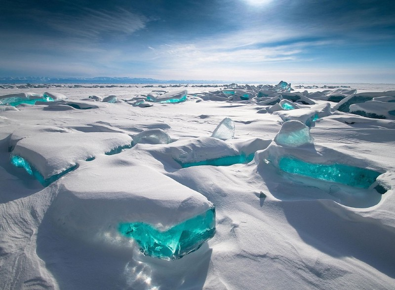

Ultimas atualizações sobre o Clima e a Terra
Acompanhe as últimas informações publicadas sobre o Clima e a Terra! Aqui você pode monitorar essas atualizações a qualquer momento.
Veja sobre o Clima e a Terra nesse momento!Climas gerais:
Phoenix: 106 °F (~41 °C)
Dallas: 101 °F (~38 °C)
Austin: 98 °F (~37 °C)
Filadélfia: 96 °F (~36 °C)
San Antonio: 96 °F (~36 °C)
Nova York: 94 °F (~34 °C)
Los Angeles: 93 °F (~34 °C)
Houston: 91 °F (~33 °C)
Chicago: 80 °F (~27 °C)
San Diego: 75 °F (~24 °C)
Sobre a terra
Curiosidades, história, entre outros.
Formada há aproximadamente 4,5 bilhões de anos a partir da mesma nebulosa solar que originou o nosso Sol, a Terra evoluiu de uma massa incandescente e caótica para o único santuário de vida conhecido no universo. Em seus primórdios, o planeta passou por eventos extremos, como a colisão com um corpo celeste do tamanho de Marte chamado Theia, impacto colossal que lançou detritos na órbita terrestre e deu origem à nossa Lua. Com o passar do tempo, o resfriamento da crosta e a liberação de gases vulcânicos criaram uma atmosfera primitiva, enquanto o bombardeio de cometas ricos em gelo e o vapor d'água condensado preencheram as bacias, formando os primeiros oceanos e permitindo o surgimento das primeiras formas de vida unicelulares há cerca de 3,5 bilhões de anos. Além dessa história monumental, o planeta abriga curiosidades fascinantes escondidas sob nossa rotina. Por exemplo, a Terra não é uma esfera perfeita, mas sim um esferoide oblato, o que significa que ela é ligeiramente achatada nos polos e abaulada na linha do Equador devido à força centrífuga de sua própria rotação. Outro fato surpreendente é que o núcleo do nosso planeta, composto principalmente de ferro e níquel líquidos em sua camada externa, funciona como um gigantesco dínamo natural, gerando o campo magnético que nos protege dos ventos solares mortais e da radiação cósmica. Além disso, embora pareça firme sob nossos pés, a crosta terrestre está fragmentada em placas tectônicas que se movem constantemente na velocidade com que nossas unhas crescem, remodelando continentes e criando montanhas ao longo de eras. Hoje, a dinâmica da biosfera continua a sustentar bilhões de espécies interconectadas, transformando este ponto azul claro em um sistema vivo e complexo que ainda guarda segredos profundos em suas fossas oceânicas e camadas geológicas mais profundas.